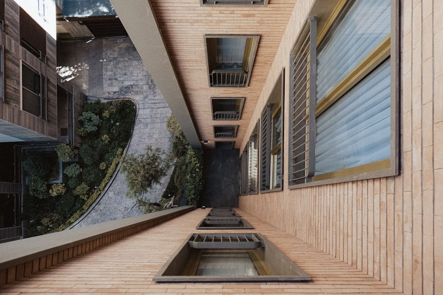
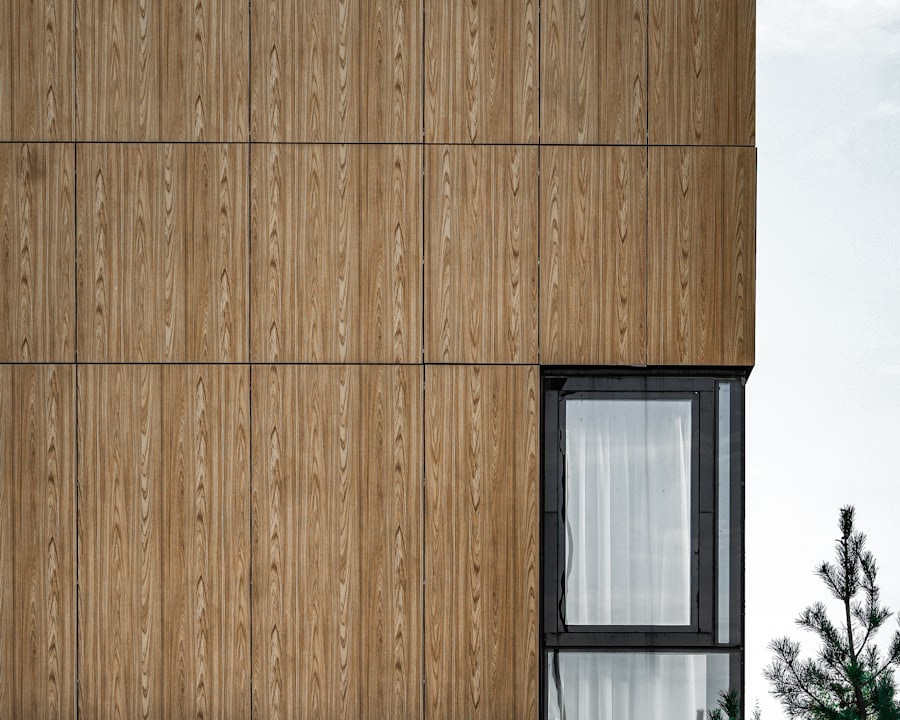
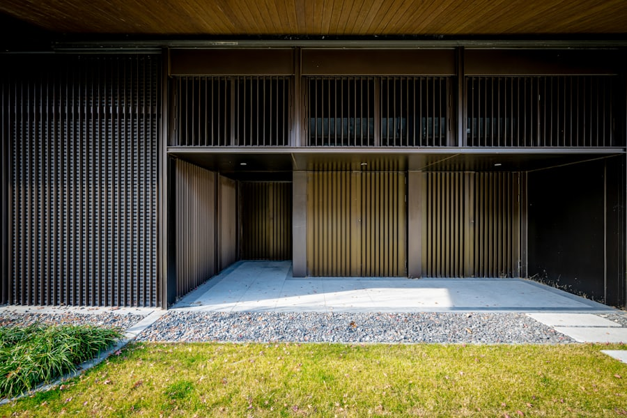

深沢の家
中庭を囲む口の字型プランで、四方から光を取り込む住まい。
FIG. 01 — OUR APPROACH
図面より先に、光の入り方を描く。 Before the plan, we draw how the light enters.
敷地に立ち、朝から夕方まで太陽の動きを確かめる。窓の位置も壁の厚みも、そこから決まっていきます。私たちにとって設計とは、光と風の通り道を、暮らしの動線に翻訳する作業です。
FIG. 02 — SELECTED WORKS

中庭を囲む口の字型プランで、四方から光を取り込む住まい。

築35年の鉄骨造を、杉板張りの温かな住まいへ。

夫婦二人のための、庭とひとつづきになる平屋。
FIG. 03 — 家づくりの流れ
敷地とご要望をお伺いします(無料・オンライン可)。
光と動線を検討した設計案をご提示します。
詳細設計と概算費用を確定します。
提携工務店と密に連携し、現場を管理します。
完成後10年間、定期点検にお伺いします。
設計実績
平均設計期間
引き渡し後保証
リピート・紹介率